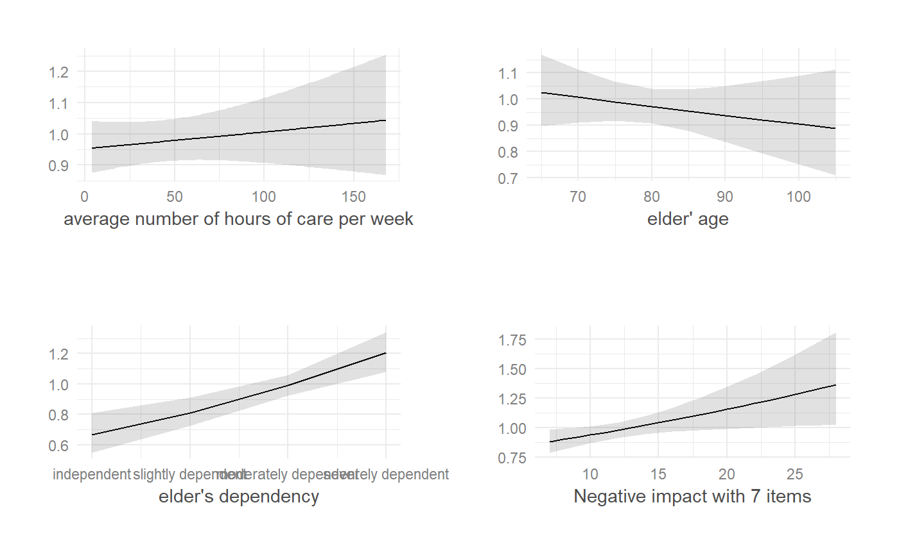
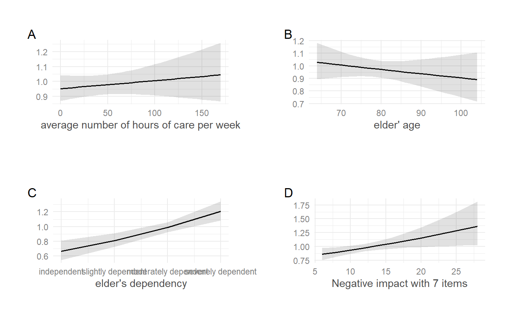

Plot multiple ggplot-objects as a grid-arranged single plot.
plot_grid(x, margin = c(1, 1, 1, 1))
| x | A list of ggplot-objects. See 'Details'. |
|---|---|
| margin | A numeric vector of length 4, indicating the top, right, bottom and left margin for each plot, in centimetres. |
An object of class gtable.
This function takes a list of ggplot-objects as argument.
Plotting functions of this package that produce multiple plot
objects (e.g., when there is an argument facet.grid) usually
return multiple plots as list (the return value is named plot.list).
To arrange these plots as grid as a single plot, use plot_grid.
data(efc) # fit model fit <- lm(tot_sc_e ~ c12hour + e17age + e42dep + neg_c_7, data = efc) # plot marginal effects for each predictor, each as single plot p <- sjp.lm(fit, type = "eff", facet.grid = FALSE, prnt.plot = FALSE)#> Warning: 'sjp.lm' is deprecated. #> Use 'plot_model' instead. #> See help("Deprecated")# plot grid plot_grid(p$plot.list)# or plot_grid(p)